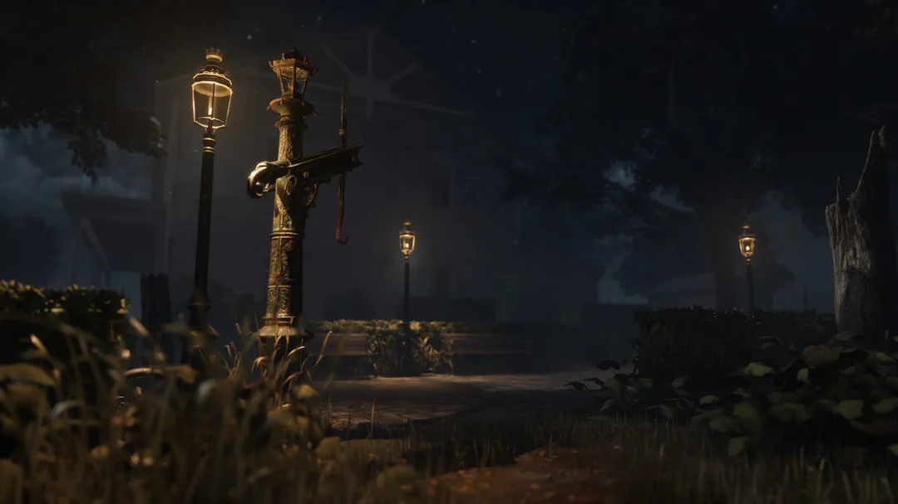
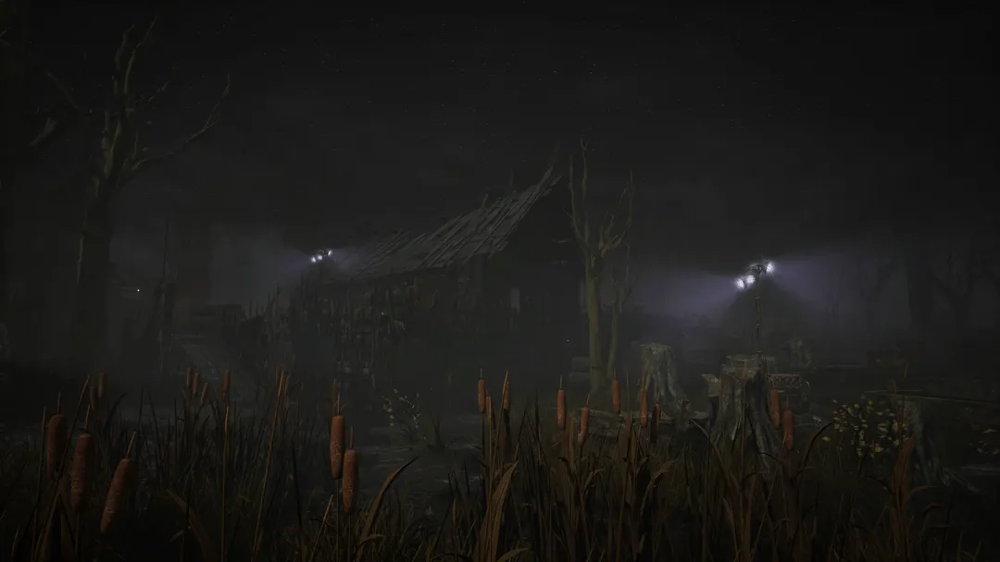
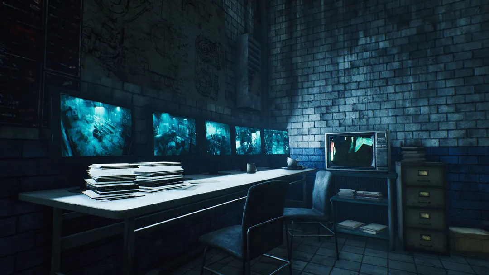
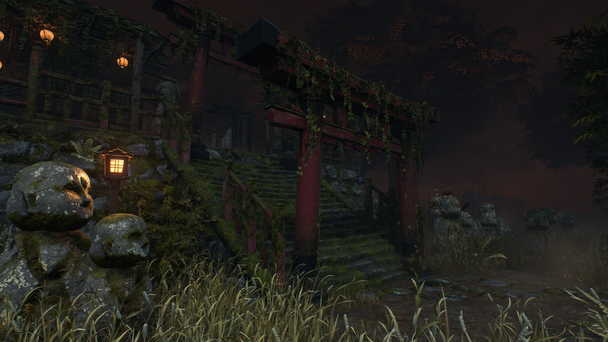
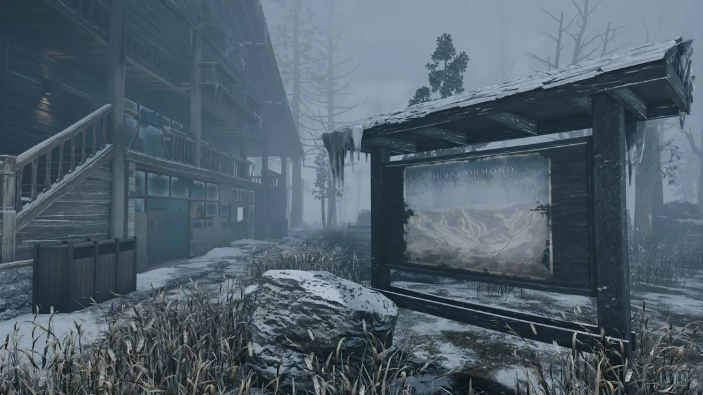
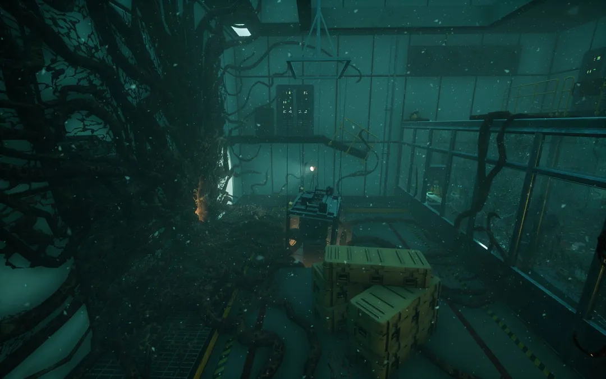
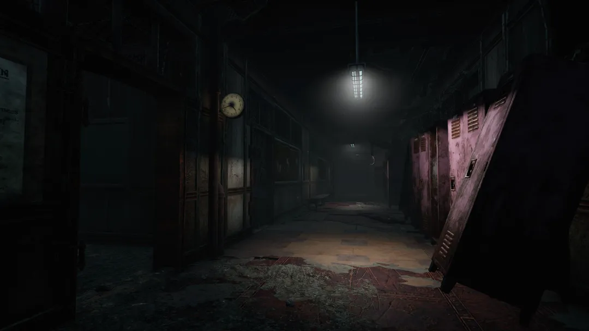

In Dead by Daylight each of the maps is inside a Realm where the trials are played.
Each Realm is associated with a Killer that was brought in by the Entity.
Each Realm consists of around 1 or more variations of the realm
The different variations have different window and pallet spawns which also changes the spawn of the main building and killer shack.
Dead by Daylight currently has 20 realms which are
Mac Millian Estate associated with The Trapper
Coal Tower
Groaning Storehouse
Ironworks of Misery
Shelter Woods
Suffocation Pit
Autohaven Wreckers associated with The Wraith
Azarov's Resting Place
Blood Lodge
Gas Heaven
Wrecker's Yard
Wretched Shop
Coldwind Farm associated with The Hillbilly
Fractured Cowshed
Rancid Abattoir
Rotten Fields
The Thompson House
Torment Creek
Crotus Prenn Asylum associated with The Nurse
Disturbed Ward
Father Campbell's
Haddonfield associated with The Shape

Lampkin Lane
Backwater Swamp associated with The Hag

The Pale Rose
Grim Pantry
Lery's Memorial Institute associated with The Doctor
Treatment Theatre
Red Forest associated with The Huntress
Mother's Dwelling
The Temple of Purgation
Springwood associated with The Nightmare
Badham Preschool
Gideon Meat Plant associated with The Pig

The Game
Yamaoka Estate associated with The Spirit

Family Residence
Sanctum of Wrath
Ormond associated with The Legion

Mount Ormond Resort
Hawkins National Labratory associated with The Demogorgon

The Underground Complex
Grave of Glenvale associated with The Deathslinger
Dead Dawg Saloon
Silent Hill associated with The Executioner

Midwich Elementary
Raccoon City associated with The Nemesis and The Mastermind
Racoon City Police Station features east and west wing
Forsaken Boneyardassociated with the Skull Merchant